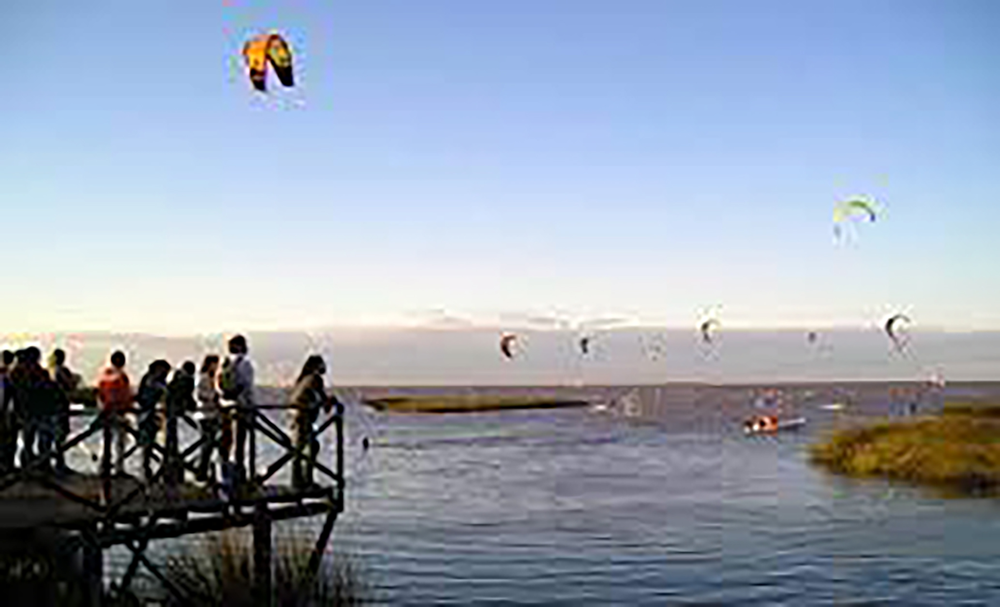

Top three activities to do at SI

Walk the old centre
Loose yourself on the beautiful streets of the historic centre, have a cup of coffee and enjoy the craft fairs during the weekends.

Enjoy the river
Prepare some mates and be ready to be in front of the Rio de la Plata for an outdoor activity. Relax and be present with your loved ones.
Visit the cathedral
Created in the XIX centrury, this neogothic building is beautiful and worth visiting. Have lunch in front of it and visit the famous square next to it.